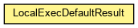

org.waarp.commandexec.utils
Class LocalExecDefaultResult
java.lang.Object
 org.waarp.commandexec.utils.LocalExecDefaultResult
org.waarp.commandexec.utils.LocalExecDefaultResult
public class LocalExecDefaultResult
- extends Object

Default message for LocalExec
- Author:
- Frederic Bregier
| Methods inherited from class java.lang.Object |
clone, equals, finalize, getClass, hashCode, notify, notifyAll, toString, wait, wait, wait |
NoCommand
public static LocalExecResult NoCommand
BadTransmition
public static LocalExecResult BadTransmition
NoMessage
public static LocalExecResult NoMessage
NotExecutable
public static LocalExecResult NotExecutable
BadExecution
public static LocalExecResult BadExecution
TimeOutExecution
public static LocalExecResult TimeOutExecution
InternalError
public static LocalExecResult InternalError
NoStatus
public static LocalExecResult NoStatus
ConnectionRefused
public static LocalExecResult ConnectionRefused
ShutdownOnGoing
public static LocalExecResult ShutdownOnGoing
CorrectExec
public static LocalExecResult CorrectExec
RETRYINMS
public static long RETRYINMS
MAXWAITPROCESS
public static long MAXWAITPROCESS
ENDOFCOMMAND
public static String ENDOFCOMMAND
LocalExecDefaultResult
public LocalExecDefaultResult()
Copyright © 2009-2012 Waarp. All Rights Reserved.